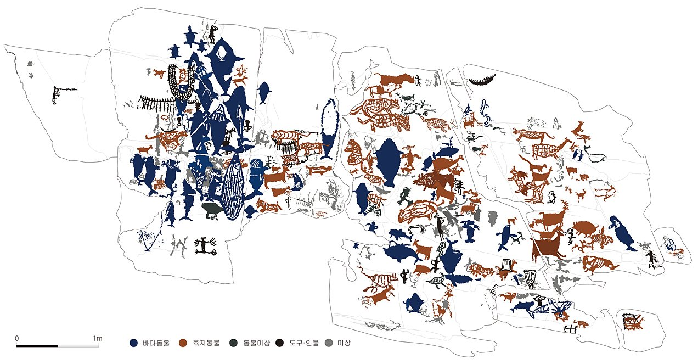
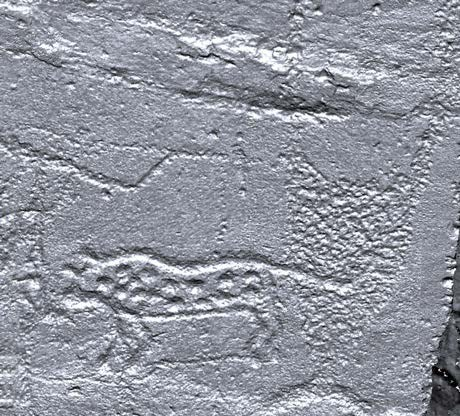
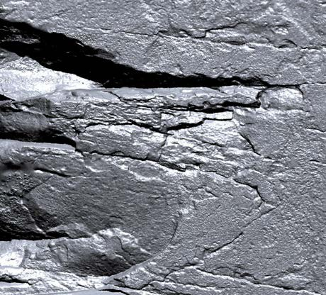
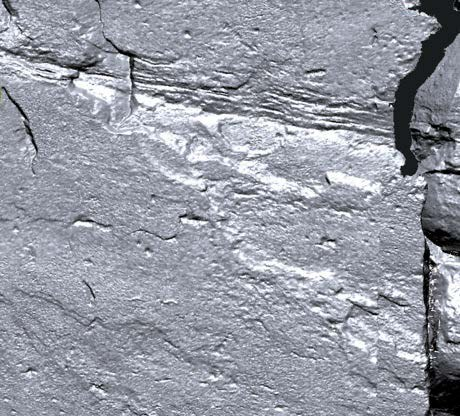
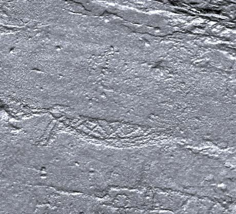
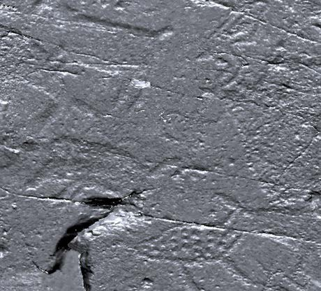
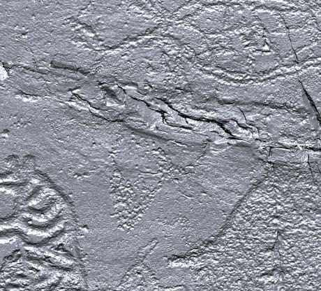
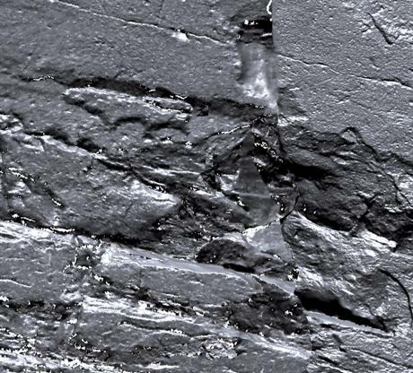

2-2 · 암각화 문양 인터랙티브

얕은 부조로 새겨진 동물 문양 면을 쪼아 표현한 대형 문양의 흔적 암면에 남은 새김선과 자연 균열 가로로 길게 이어진 새김선 곡선으로 새겨진 문양 부분 격자·점각으로 채운 표면 표현 빛의 각도에 따라 드러나는 선각 
미세한 선으로 새긴 세부 표현
도면 속 문양을 클릭해 보세요
아래는 두 유산의 공식 실측 도면입니다. 카테고리를 고르고 문양을 누르면, 그 문양만 금빛으로 빛나며 도면 속 어떤 그림인지와 상세 설명이 함께 나타납니다.

울주 대곡리 반구대 암각화 실측 도면 · 도면 위 ● 표시나 아래 문양을 누르세요
왼쪽 선화는 실제 이렇게 새겨진 바위입니다. 반구대 암면을 3D로 스캔하면, 쪼기·갈기로 새긴 문양이 바위 표면에 얕은 부조로 드러납니다. 도면의 색은 이 새김을 분류·정리한 것입니다.
오른쪽 아래 문양을 클릭하세요.
예) 북방긴수염고래를 누르면
그 문양만 빛나고 설명이 여기에 표시됩니다.
예) 북방긴수염고래를 누르면
그 문양만 빛나고 설명이 여기에 표시됩니다.
📷 실제 새김면 — 반구대 암면 3D 스캔
문양은 바위 표면에 쪼기·갈기로 얕게 새겨져 있어 맨눈으로는 잘 보이지 않습니다. 빛을 비스듬히 준 3D 스캔에서는 그 새김의 굴곡이 또렷하게 드러납니다.






